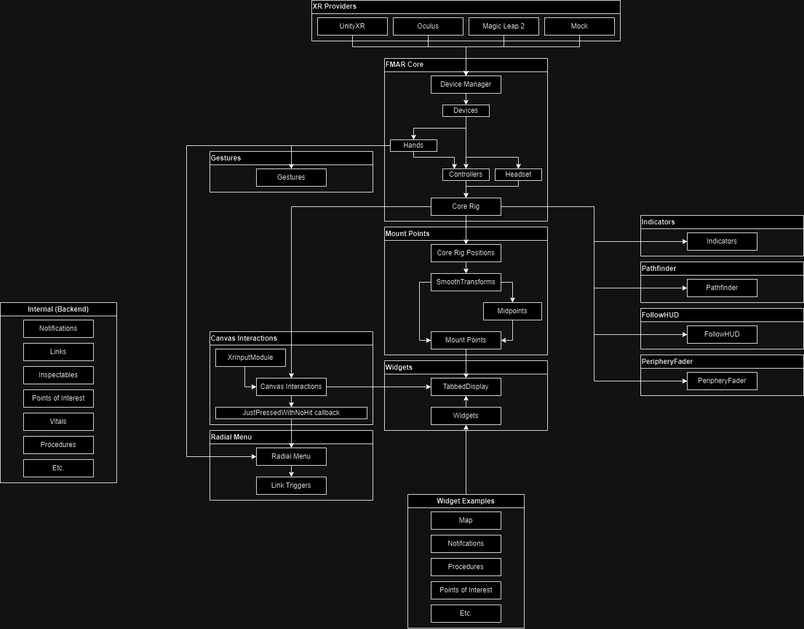

|
FirstModulAR 0.1.0
|
|
FirstModulAR 0.1.0
|
FirstModulAR (FMAR) is a framework for quickly creating AR interfaces for first-responder use cases. FMAR handles many cumbersome aspects of the AR development process, including cross-platform device management, interactions with 2D Unity canvases in 3D space, "mounting" of interfaces onto key points on the user's body, and more. The framework also implements many "example" interfaces which are intended to act as proofs-of-concept for many of the types of interfaces that could be used to enhance first-reponsder performance (for example, a map interface which draws the surrounding environment in relation to Points of Interest in the environment, HUD elements which display critical information such as remaining air in a SCBA tank, etc.).
FMAR packages are hosted on a custom Unity Package Manager (UPM) registry, allowing you to quickly integrate them into your projects. Follow these steps to add and access the FMAR packages from upm.firstmodular.nextgeninteractions.com.
FirstModulARhttps://upm.firstmodular.nextgeninteractions.com/com.firstmodularOnce the custom registry is set up, you can access all available FMAR packages from the My Registries section in Unity’s Package Manager. Follow these steps:
upm.firstmodular.nextgeninteractions.com registry.For more details on using the Unity Package Manager, visit the official Unity documentation: Unity Package Manager Documentation.
Instructions on how to quickly create an XR-ready scene with a simple placeholder cube, using the Oculus/Meta Quest hardware environment.
FMAR Core, Mock XR Provider, UnityXR XR Provider, Oculus XR Provider, FMAR Build Window.FMAR Core prefab (located in the FMAR Core Prefabs folder) into the scene.Prefabs folder and drag the corresponding XR Provider prefab into the scene, as a child of the FMAR Core game object.FMAR Core game object and in the Inspector, find the Fmar Device Manager component and click the Refresh XR Providers button. Each XR Provider should appear in the component's XR Providers list.FMAR Core Prefabs folder, drag the FMAR Core Rig into the scene.Once the scene is setup, you may build and deploy the application.
FMAR Build Window window by navigating through the topbar: Window > FMAR > Build Window.FMAR Build Window package readme file to create a new keystore profile as needed.
FMAR Core provides the Device Manager, which consolidates disparate input from XR Providers into common FMAR-universal input structures. The Core Rig further consolidates all known devices into a "rig" which represents the player's body through three data structs – a headset, a left hand/controller, and a right hand/controller. Gestures can be configured to watch the user's hands for certain poses/motions which can trigger custom logic.
Simple Visualization Layers can be added to the scene which draw additional information onto the world or directly mounted to the user's cone of vision, using only requiring the headset position as provided by the Core Rig.
Mount Points are intended to provide convenient locations upon which UI elements (e.g. the TabbedDisplay) can be "mounted". They provide an additional layer of nuance beyond the three simple positions provided by the Core Rig, providing, for example, transform positions for the user's approximated "chest" position and approximated positions of their forearms, and midpoints between various other points. Mount Points also provide built-in lerping to add an additional illusion of weight and momentum to mounted UI elements.
The Canvas Interactions object provides a system for interacting with 2D Unity canvas elements in XR, enabling two distinct but freely inter-usable schemes for interacting with 2D canvases – "touch screen" interactions and "raycasted" interactions.
CustomComponents (named as such because they are custom implementations of UI components) are custom implementations of IPointerHandler-inheriting UI components like the Button which are custom-made to behave in a way that is more suitable to XR, as compared to the default Unity UI button.
The TabbedDisplay implements CustomComponents heavily and allows the user to click on tabs to switch between multiple Widgets. Widgets are distinct interfaces that each perform a job. Examples of widgets include the Map widget, the Notifications widget for viewing, inspecting, and dismissing notifications, etc.
The RadialMenu provides a gestural way to quickly navigate through complex option trees in XR.
Internal packages manage and represent various aspects of the game state, but are not interacted with directly, instead providing public methods so that other packages can provide interfaces to change and view internal information.
In the following sections, more detail will be provided on each of these items.
FMAR provides many packages which are designed to manage various aspects of the "game state", e.g. what are points of interest that the user should be aware of? What is the vitals status of each of the connected users? Is the user currently performing a procedure and if so, what step? These packages are considered "internal" because they do not handle input from the user directly, instead they expose public methods which other packages (e.g. UI interfaces such as buttons, Gesture listeners which execute UnityEvents, and RadialMenu link triggers) can call as needed.
Since they do not reference input directly, many "internal"-facing packages have fewer dependencies on the many of the packages described in the FMAR "input stack" described later in this document. For this reason they are being discussed before these other packages.
Many internal packages are also designed to replicate their information across network sessions for many users using the Unity Netcode for GameObjects networking framework. In the event that a developer wishes to modify one of these packages or create their own Internal package which utilizes Netcode, they should take care to understand the various challenges of multiplayer development.
FMAR was developed with compatbility and interoperability in mind. True universal cross-platform support is not strictly possible at this time, since many experimental features (e.g. edge detection visualization) are only available on their respective platforms (i.e. Meta/Oculus), and even in cases where established common standards do exist (e.g. OpenXR, UnityXR) not all platforms elect to use them for all features. For example, Meta exposes their normal controllers through the UnityXR layer, but does not expose their tracked hands through the UnityXR layer, despite the fact that UnityXR provides data structures that are intended to represent hands. Surely adequate reasons for these decisions are known by the respective hardware manufactures, however it does pose a difficulty for our purposes in creating a platform that transcends hardware barriers and is as interoperable as possible.
The solution we have created in response to these challenges is the FMAR XR Providers system and the FMAR Device Manager. Simply put, XR Providers expose all the input provided by their respective hardware platforms and convert it into universal middle-layer data structures that are recognized by all FMAR objects and interactions.
Note that with the exception of the hardware platform's respective XR Provider, FMAR should not (as much as possible) refer to platform-specific input data structures directly. Rather, every attempt should be made to refer to universal/common data types implemented by the FMAR Core package (e.g. Controller, CommonHand, etc.).
Controllers are the basis for the majority of "input" in FMAR.
By this definition, a controller is any input "device" which can expose a position, a pointing direction, and a "pressed" boolean. This could either be a physical controller with buttons and triggers, or even a tracked hand, since a tracked hand can provide all of the necessary information just discussed.
Any tracked hand exposed by an XR Provider is represented internally as an FMAR CommonHand.
CommonHands have the property of being considered, for all intents and purposes, Controller objects in their own right. Making the pinch gesture with the hand is equivalent to triggering the Pressed event for a controller.
However, unlike normal controllers, CommonHands have the unique ability to trigger Gestures.
Gestures are optional and not actually a feature of FMAR Core. However, they do add an additional layer of input parsing that can provide some useful shorthand inputs for users.
Gestures can be "tracked" by adding Gesture components to the scene which are configured to "listen" for specific gestures. For example, you could add an Open Palm Thrust Gesture to the scene, and configure it to trigger when the user holds their left hand open with their palm towards the sky, and then thrusts their hand upwards. You can then set UnityEvents from other objects in the scene to occur when the gesture triggers.
The example described above is how the TabbedDisplay is summoned in the various FMAR demo scenes. To dismiss the TabbedDisplay, an additional Open Palm Thrust Gesture is added, simply configured to listen for open palm thrusts in the opposite (downwards) direction.
Currently supported gestures are:
Open Palm Thrust Gesture (already noted)Directional Pinch GesturePinch And Move GestureThumbs Up GestureThe Core Rig is provided as a way to take the potentially numerous, abstract "devices" exposed by the DeviceManager, and using them, more intuitively represent the user as a humanoid structure composed of three points: two controllers (left-handed and right-handed) and a headset.
Most other packages also reference the Core Rig to access positional/rotational data of the controllers/headset, since in most cases there is no need to (for example) process the position of a controller that is not being actively used.
A camera is also provided by default on the Core Rig root GameObject. The position and rotation of Core Rig root GameObject (and thus the camera) are constrained to the position and rotation of the headset struct exposed by the Device Manager.
Certain packages provide simple visualizations over the game world, either as 3D spatialized glyphs in the world that are drawn positionally in proximity to the real-world objects they are supposed to mark (e.g. in the case of the Indicators package), or as an overlay that is kept continuously in the user's cone of vision (e.g. in the case of the PeripheryFader package). These packages are fairly innocuous in that they require very little "input". In most cases the only input they require is the position of the headset as exposed by the Core Rig, so that they can, for example, always rotate Indicators to face the camera head-on, or keep the PeripheryFader mounted to the user's head.
Over the course of XR development, very often the need arises for behavior where a UI element (for example, the soon-to-be-discussed TabbedDisplay) should be "attached" to a point on the user's Core Rig – either the headset (creating a sort of HUD effect) or on either one of the hands.
However, additional features were desired that added layers of complexity, that for purposes of simplicity were not appropriate to add directly to the Core Rig.
For example, in many cases if a UI element configured to follow a point on the Core Rig, does so in such a way that it is "perfectly" constrained to a point on the Core Rig (i.e. on a frame-by-frame basis, perfectly and instantly setting its position and rotation to be that of the point exposed by the Core Rig), the overall effect is interestingly uncanny. The UI element is decidedly virtual, seemingly having no weight or intertia whatsoever. We have found that having a slight lerping/smooth damping effect associated with UI elements that are bound in this way gives them the illusion of physical weight and momentum, and counterintuitively enough, makes them feel even more responsive and tight to the user.
The Mount Point system is a way of providing these desired features in a consolidated way.
The Canvas Interactions object provides a middle-layer which enables users to interact with default Unity canvas systems using a custom-made Unity input module, the XrInputModule.
There are two primary methods of interacting with 2D canvases in 3D space:
Either method can be used at any time, the system is designed to allow freely switching between the two methods.
The touch screen method works something like this:
TabbedDisplay.IPointerHandler-inheriting components.EventSystem events are triggered e.g. OnPointerDown.The raycast method works something like this:
TabbedDisplay.IPointerHandler-inheriting components.EventSystem events are triggered e.g. OnPointerDown.As described above, the Canvas Interactions system is designed to work with default Unity canvas items such as UnityEngine.UI.Button and UnityEngine.UI.Scrollbar. These IPointerHandler-inheriting components are quite useful as an out-of-the-box solutions and for most use cases are typically sufficient for representing 2D UI elements such as buttons.
However, these components' behaviors are predefined in ways that are not always optimal for an XR interface. For instance, the default Button behavior is to trigger its onClick event when both the IPointerDown and IPointerUp events have been triggered in succession on the same component. In a traditional 2D desktop environment, this would result in behavior where the user doesn't really "click" a button until they both click down and let up the mouse cursor, providing a bit more insurance for any given button click that the event is the result of an intentional input made by the user, and not an accidental misclick.
However, this generally-sound decision simply becomes a nuisance in certain XR scenarios. For instance, using the "touch-screen" interaction paradigm described in the Canvas Interactions section, this down-and-up behavior is much more difficult to consistently execute when the touch screen in question is a virtual abstraction with no physical surface to provide guidance and reference for the touch action – as opposed to a real physical touch screen which would provide immediate touch sensory information to the user when the fingertip touches the surface of the screen. In light of these differences, the "virtual" touch screen feels markedly more usable when click events trigger as soon as the IPointerDown event is triggered.
To this end, the CustomComponents button was created to serve as a replacement of the default Unity button. These custom buttons behave in the way described above (immediately triggering click event on pointer down). Additionally, several convenience features have been added to the button such as visual mouseover effects, sound effects on button press, etc.
In almost every widget, 2D interface, etc. the CustomComponents button has been used in place of the default Unity button. If any exceptions to this rule are found, such cases are likely unintentional oversights.
The TabbedDisplay provides an AR interface that should be instantly familiar to any denizen of the modern age – a flat surface which is equivalent to the touch screen of a tablet or smartphone. While this interface, from a theoretical standpoint, does not strictly take advantage of all of the rich, gestural input that XR tracking can provide, its redeeming virtue is that it is instantly recognizable to the majority of users likely to be using FMAR, ensuring that the majority of users will be able, at least in some way, access the majority of FMAR features.
The TabbedDisplay as a whole is attached, at an offset, to the user's left wrist, allowing users to easily use their right hand to interact with the elements on the display surface. This decision was made with the fact that most users will be right-handed in mind – but a bit of refactoring would allow users to change their 'dominant' hand for TabbedDisplay usage. However, even left handed users can still interact with the display easily. The display follows the user's left hand when the palm is facing upright, but will remain in place when the user's hand is rotated with the palm facing downwards, allowing other interactions to be performed.
The TabbedDisplay is composed of numerous "tabs", each of which includes a Widget, a distinct 2D interface which is usually bound to a certain specific backend system (or in some cases several backend systems).
Any combination of Widgets can be added as desired into the TabbedDisplay of a given FMAR scene.
Some examples of Widgets are:
Map (shows Points of Interest in proximity to the user, allows zooming in and out)Points of Interest (allows the user to view and edit a list of all known Points of Interest)Notifications (allows the user to view, inspect, and dismiss notifications)Procedures (allows the user to select, progress through, and navigate procedures)The Radial Menu is a method of UI traversal that takes advantage of the unique affordances of XR input schemes, providing users with the ability to quickly navigate vast hierarchies of options using broad, gestural input.
However, the drawback is that, unlike in the case of the Tabbed Display, most users will have no experience with menus of this nature and therefore will not understand its usage intuitively. The Radial Menu, then, can be considered as a powerful tool that is locked behind a minor usability barrier. That said, the Radial Menu is simple enough that instructing a new user in its usage should not have to take more than a couple of minutes, and some technically-inclined users should even be able to figure it out through a bit of self-guided experimentation.
Currently the Radial Menu is accessed through a double-pinch gesture made on the right hand. Once the user does this and "holds" the second pinch, a ring will appear around the user's hand for as long as the pinch is sustained. The ring is divided into distinct "quadrants", each of which represents a selectable option. The user can select an option by moving their hand out of the center of the ring into any of the quadrants as desired. Doing so will highlight the selected quadrant, giving the user visual feedback about their current selection. To confirm the current selection, the user simply releases the pinch.
In addition to this, an option can possess a "nested" options set which then creates another ring menu with its own distinct options set. Options that possess a nested set are indicated with an arrow/caret pointing in the same direction as the pointing direction of the quadrant. To navigate into such a nested set, the user simply moves their hand all the way out of the ring in the direction of the desired option.
Links are a somewhat unconventional but, quite useful way to embed an action in a string. Originally they were devised as an alternative way to replicate a lambda function across the network. Their inspiration and namesake is rooted in the often very-verbose enormous web URLs that contain all sorts of data that is specific to a given user session, often containing all sorts of information as a massive base-64 string. FMAR links are a bit more human-readable than that, usually occurring as plain English keywords, but the name stuck as links are just simple slash-separated strings that indicate an action the system should take, or a place the user should be directed to.
This system, again, is somewhat unconventional and experimental. It may take a bit of time and experimentation for developers who areapproaching the project for the first time to get a sense of their use cases and the types of situation in which they are useful.
In conclusion, FMAR is a framework for quickly creating first responder AR interfaces. Using the FMAR "input stack" (i.e. the Device Manager, Core Rig, and Canvas Interactions), developers can quickly create useful AR applications by using existing interfaces, widgets, or visualization overlays, or designing new ones as needed – without having to engineer solutions to low-level problems like cross-platform compatibility, device management, etc.
FirstModulAR is licensed under the Apache License 2.0.
You are free to use, modify, and distribute the framework as long as you adhere to the terms of the Apache License, which includes appropriate attribution to FMAR and maintaining the license notice in any distributed version.
A full copy of the Apache License 2.0 can be found in the root directory of this repository under the LICENSE file, as well as within each FirstModulAR package.